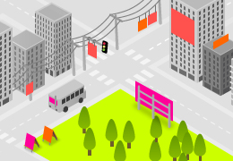
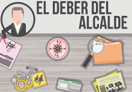

-
Desde tu comuna escríbele a los candidatos tus inquietudes, revisa lo que otros les están preguntando y averigua quiénes son los que más responden.
-
Fiscaliza
Denuncia todo aquello que quieras mejorar en tu comuna; cuéntanos de lugares públicos en mal estado y propaganda electoral inapropiada, entre otros.
-

Propaganda electoral ilegal
¿Qué está realmente prohibido?
Los datos duros de nuestra legislación sobre la forma en que los candidatos pueden hacer su campaña electoral. -

¿Qué debe hacer el Alcalde?
Cada 4 años los elegimos, pero sabemos realmente los principales deberes de todo alcalde. Aquí encontrarás todo el material para poder fiscalizar.